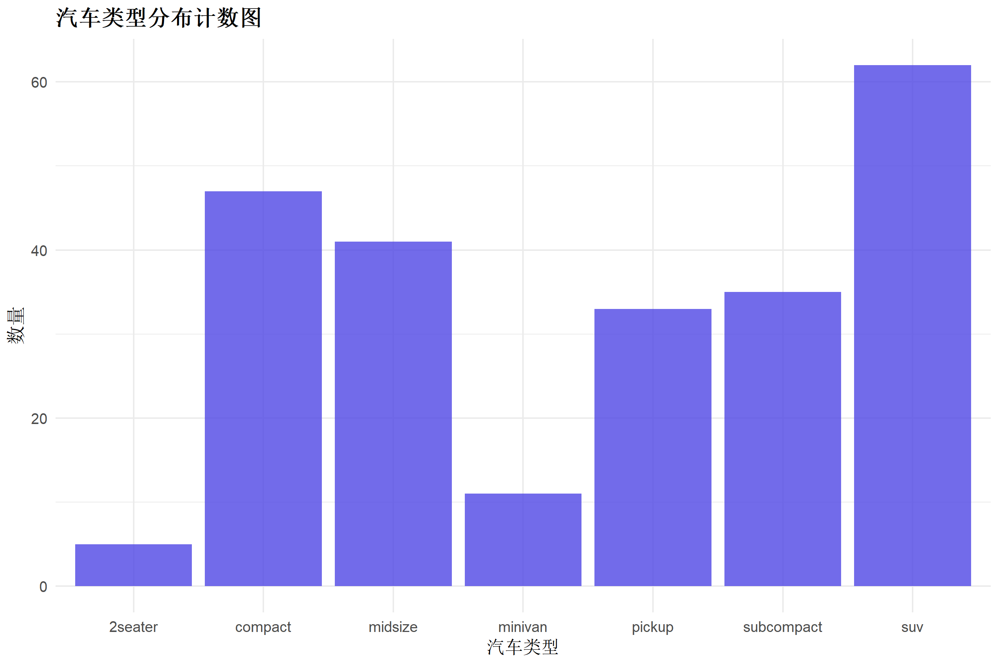
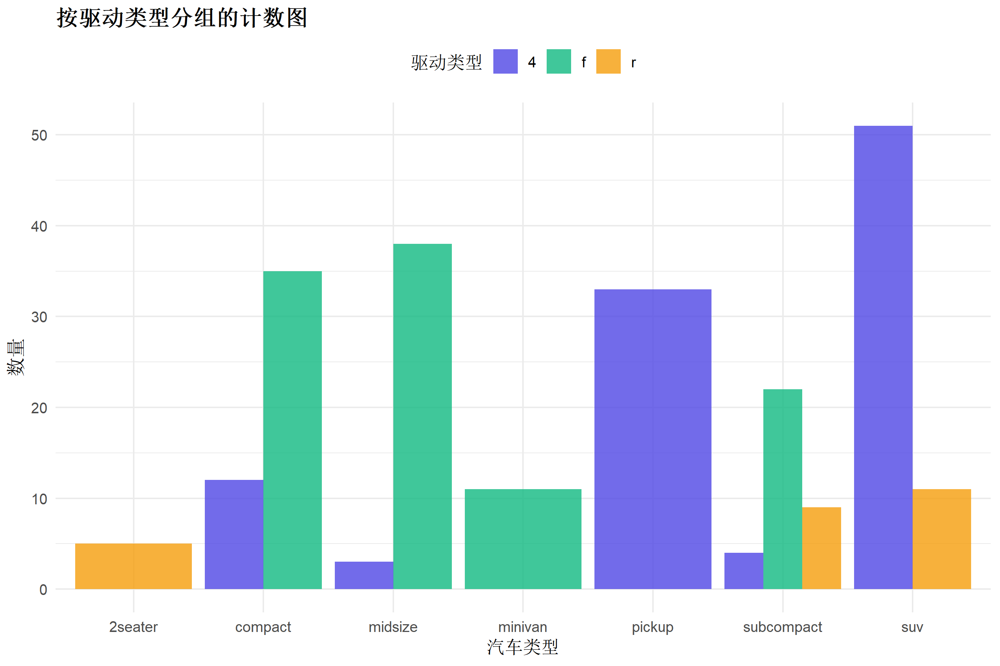
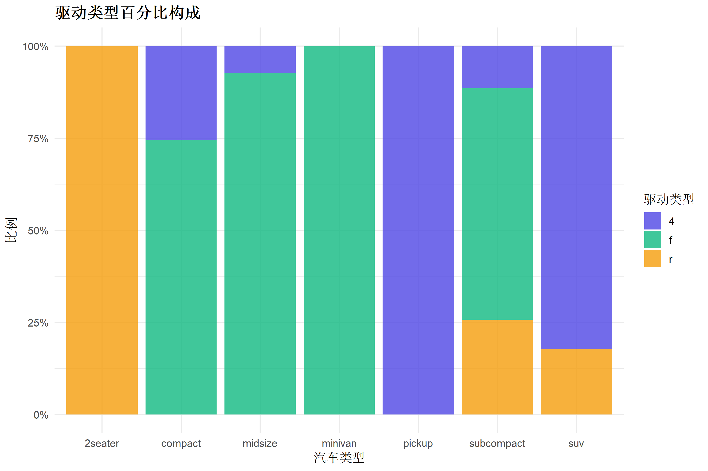
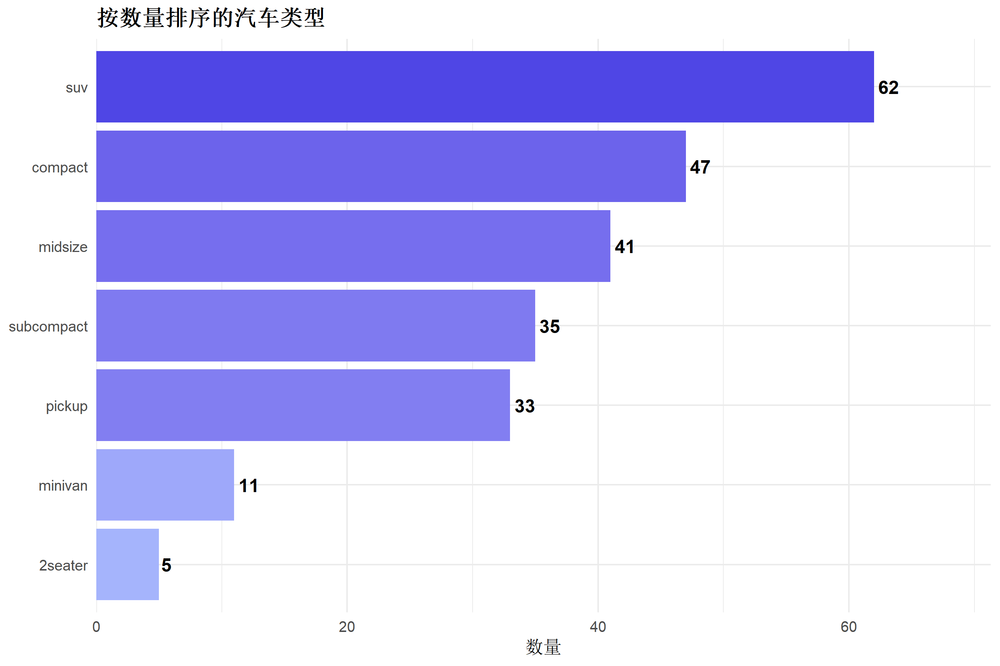
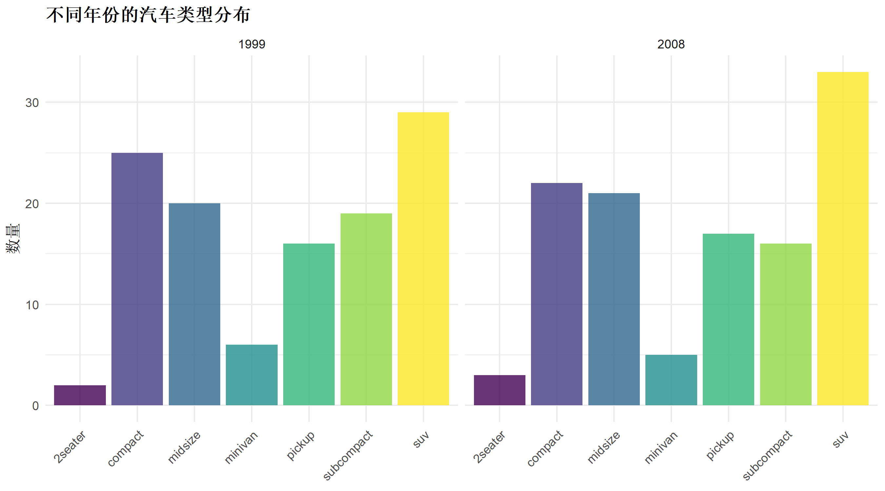

library(ggplot2)
library(dplyr)R语言置信区间图绘制
可视化教程
统计图表
不确定性图
什么是计数图与分类图
计数图（Count Plot）和分类图（Categorical Plot）用于展示分类变量的频数分布和分类变量间的关系，是探索性数据分析的基础工具。
适用场景
| 场景 | 说明 |
|---|---|
| 频数统计 | 各类别出现次数 |
| 分组比较 | 多类别交叉统计 |
| 类别分布 | 观察数据不平衡 |
R包加载
基础计数图
# 使用内置数据
data(mpg)
ggplot(mpg, aes(x = class)) +
geom_bar(fill = "#4f46e5", alpha = 0.8) +
labs(
title = "汽车类型分布计数图",
x = "汽车类型",
y = "数量"
) +
theme_minimal(base_size = 12) +
theme(plot.title = element_text(face = "bold"))
按变量着色
ggplot(mpg, aes(x = class, fill = drv)) +
geom_bar(position = "dodge", alpha = 0.8) +
scale_fill_manual(values = c("#4f46e5", "#10b981", "#f59e0b")) +
labs(
title = "按驱动类型分组的计数图",
x = "汽车类型",
y = "数量",
fill = "驱动类型"
) +
theme_minimal(base_size = 12) +
theme(
plot.title = element_text(face = "bold"),
legend.position = "top"
)
百分比堆叠图
ggplot(mpg, aes(x = class, fill = drv)) +
geom_bar(position = "fill", alpha = 0.8) +
scale_fill_manual(values = c("#4f46e5", "#10b981", "#f59e0b")) +
scale_y_continuous(labels = scales::percent) +
labs(
title = "驱动类型百分比构成",
x = "汽车类型",
y = "比例",
fill = "驱动类型"
) +
theme_minimal(base_size = 12) +
theme(plot.title = element_text(face = "bold"))
水平计数图（排序）
mpg %>%
count(class) %>%
mutate(class = forcats::fct_reorder(class, n)) %>%
ggplot(aes(x = n, y = class, fill = n)) +
geom_col() +
geom_text(aes(label = n), hjust = -0.2, fontface = "bold") +
scale_fill_gradient(low = "#a5b4fc", high = "#4f46e5") +
scale_x_continuous(expand = expansion(mult = c(0, 0.15))) +
labs(
title = "按数量排序的汽车类型",
x = "数量",
y = NULL
) +
theme_minimal(base_size = 12) +
theme(
plot.title = element_text(face = "bold"),
legend.position = "none"
)
分面分类图
ggplot(mpg, aes(x = class, fill = class)) +
geom_bar(alpha = 0.8, show.legend = FALSE) +
facet_wrap(~year) +
scale_fill_viridis_d() +
labs(
title = "不同年份的汽车类型分布",
x = NULL,
y = "数量"
) +
theme_minimal(base_size = 11) +
theme(
plot.title = element_text(face = "bold"),
axis.text.x = element_text(angle = 45, hjust = 1)
)
总结
| 图表类型 | 用途 | 关键参数 |
|---|---|---|
| 基础计数图 | 单变量频数 | geom_bar() |
| 分组计数图 | 交叉频数 | position = "dodge" |
| 百分比堆叠 | 比例构成 | position = "fill" |
| 排序计数图 | 突出排名 | fct_reorder() |
相关教程
{r setup, include=FALSE} knitr::opts_chunk$set( echo = TRUE, warning = FALSE, message = FALSE, fig.width = 10, fig.height = 10, fig.retina = 2, out.width = "100%", dpi = 150 )
什么是矩阵图/成对图
矩阵图（Pairwise Plot/Pairs Plot）将多个变量两两组合，在一个矩阵布局中同时展示所有变量之间的关系，是多变量探索性分析的利器。
R包加载
library(ggplot2)
library(dplyr)
library(GGally)基础成对图
# 使用内置iris数据
ggpairs(iris, columns = 1:4, aes(color = Species, alpha = 0.6)) +
scale_color_manual(values = c("#4f46e5", "#10b981", "#f59e0b")) +
scale_fill_manual(values = c("#4f46e5", "#10b981", "#f59e0b")) +
theme_minimal() +
theme(plot.title = element_text(face = "bold"))自定义对角线
ggpairs(iris,
columns = 1:4, aes(color = Species),
diag = list(continuous = wrap("densityDiag", alpha = 0.5)),
lower = list(continuous = wrap("points", alpha = 0.5, size = 1)),
upper = list(continuous = wrap("cor", size = 3))
) +
scale_color_manual(values = c("#4f46e5", "#10b981", "#f59e0b")) +
theme_bw()使用基础R的pairs函数
pairs(iris[, 1:4],
col = c("#4f46e5", "#10b981", "#f59e0b")[iris$Species],
pch = 19,
main = "鸢尾花数据矩阵图"
)总结
| 函数 | 特点 |
|---|---|
GGally::ggpairs() |
最灵活，ggplot2风格 |
pairs() |
基础R，快速简单 |
相关教程
{r setup, include=FALSE} knitr::opts_chunk$set( echo = TRUE, warning = FALSE, message = FALSE, fig.width = 10, fig.height = 5, fig.retina = 2, out.width = "100%", dpi = 150 )
什么是自相关图
自相关图（ACF/PACF Plot）用于分析时间序列数据的自相关性，是时间序列建模前的必要诊断工具。
- ACF: 自相关函数，衡量序列与其滞后值的相关性
- PACF: 偏自相关函数，排除中间滞后项的影响
R包加载
library(ggplot2)
library(dplyr)
library(forecast)准备时序数据
# 使用内置AirPassengers数据
data(AirPassengers)
ts_data <- as.numeric(AirPassengers)基础ACF图
acf(ts_data, main = "自相关函数图 (ACF)", col = "#4f46e5", lwd = 2)基础PACF图
pacf(ts_data, main = "偏自相关函数图 (PACF)", col = "#10b981", lwd = 2)使用ggplot2美化
```{r fig.height=4} # 提取ACF数据 acf_data <- acf(ts_data, plot = FALSE) acf_df <- data.frame( lag = acf_data\(lag[-1], acf = acf_data\)acf[-1] )
置信区间
ci <- qnorm(0.975) / sqrt(length(ts_data))
ggplot(acf_df, aes(x = lag, y = acf)) + geom_hline(yintercept = 0, color = “gray50”) + geom_hline(yintercept = c(-ci, ci), linetype = “dashed”, color = “#ef4444”) + geom_segment(aes(xend = lag, yend = 0), color = “#4f46e5”, linewidth = 1) + geom_point(color = “#4f46e5”, size = 2) + labs( title = “自相关函数图 (ACF)”, subtitle = “红色虚线表示95%置信区间”, x = “滞后阶数”, y = “自相关系数” ) + theme_minimal(base_size = 12) + theme(plot.title = element_text(face = “bold”))
---
## ACF与PACF并排
```{r fig.width=12, fig.height=4}
library(patchwork)
# ACF
p1 <- ggplot(acf_df, aes(x = lag, y = acf)) +
geom_hline(yintercept = c(-ci, ci), linetype = "dashed", color = "#ef4444") +
geom_segment(aes(xend = lag, yend = 0), color = "#4f46e5", linewidth = 1) +
geom_point(color = "#4f46e5", size = 2) +
labs(title = "ACF", x = "滞后", y = "ACF") +
theme_minimal() +
theme(plot.title = element_text(face = "bold"))
# PACF
pacf_data <- pacf(ts_data, plot = FALSE)
pacf_df <- data.frame(lag = pacf_data$lag, pacf = pacf_data$acf)
p2 <- ggplot(pacf_df, aes(x = lag, y = pacf)) +
geom_hline(yintercept = c(-ci, ci), linetype = "dashed", color = "#ef4444") +
geom_segment(aes(xend = lag, yend = 0), color = "#10b981", linewidth = 1) +
geom_point(color = "#10b981", size = 2) +
labs(title = "PACF", x = "滞后", y = "PACF") +
theme_minimal() +
theme(plot.title = element_text(face = "bold"))
p1 + p2总结
| 图表 | 用途 | ARIMA判断 |
|---|---|---|
| ACF | 识别MA阶数 | 截尾→MA(q) |
| PACF | 识别AR阶数 | 截尾→AR(p) |
相关教程
{r setup, include=FALSE} knitr::opts_chunk$set( echo = TRUE, warning = FALSE, message = FALSE, fig.width = 8, fig.height = 6, fig.retina = 2, out.width = "100%", dpi = 150 )
什么是词云图
词云图（Word Cloud）用词语的大小和颜色表示词频或重要性，是文本数据可视化的经典方式。
R包加载
library(wordcloud)
library(RColorBrewer)
library(dplyr)准备数据
# 创建示例词频数据
words_data <- data.frame(
word = c(
"数据分析", "可视化", "机器学习", "R语言", "统计", "回归",
"分类", "聚类", "预测", "模型", "算法", "深度学习",
"Python", "数据挖掘", "大数据", "人工智能", "神经网络",
"特征工程", "交叉验证", "随机森林"
),
freq = c(
100, 85, 70, 95, 60, 50, 45, 40, 55, 75, 35, 30,
80, 65, 55, 45, 25, 35, 30, 40
)
)基础词云
set.seed(42)
wordcloud(
words = words_data$word,
freq = words_data$freq,
min.freq = 20,
max.words = 100,
random.order = FALSE,
colors = brewer.pal(8, "Dark2")
)自定义颜色
custom_colors <- colorRampPalette(c("#4f46e5", "#10b981", "#f59e0b"))(10)
set.seed(42)
wordcloud(
words = words_data$word,
freq = words_data$freq,
min.freq = 20,
scale = c(3, 0.5),
random.order = FALSE,
colors = custom_colors
)
title("数据科学关键词", col.main = "#1f2937", font.main = 2)使用wordcloud2（交互式）
```{r eval=FALSE} # install.packages(“wordcloud2”) library(wordcloud2)
wordcloud2(words_data, size = 0.8, color = “random-light”, backgroundColor = “#1e1b4b” )
---
## 总结
| 包 | 特点 |
|------|------|
| `wordcloud` | 静态，简单快速 |
| `wordcloud2` | 交互式，支持形状 |
### 相关教程
- [柱状图与饼图](2028-bindbarchart.html)
---
title: "R语言网络关系图绘制"
date: "2026-01-15"
categories: [可视化教程, 统计图表, 网络图]
image: "images/bindnetwork_cover.svg"
---
```{r setup, include=FALSE}
knitr::opts_chunk$set(
echo = TRUE, warning = FALSE, message = FALSE,
fig.width = 8, fig.height = 8, fig.retina = 2, out.width = "100%", dpi = 150
)什么是网络关系图
网络关系图（Network Graph）用节点和边表示对象之间的关系，适合展示社交网络、引用关系、知识图谱等。
R包加载
library(igraph)
library(ggraph)
library(tidygraph)创建网络数据
# 创建边数据
edges <- data.frame(
from = c("A", "A", "B", "B", "C", "D", "E", "E", "F"),
to = c("B", "C", "D", "E", "D", "F", "F", "G", "G")
)
# 创建图对象
graph <- as_tbl_graph(edges, directed = FALSE)基础网络图
ggraph(graph, layout = "fr") +
geom_edge_link(color = "#94a3b8", width = 1) +
geom_node_point(size = 8, color = "#4f46e5") +
geom_node_text(aes(label = name), color = "white", fontface = "bold") +
theme_void() +
labs(title = "基础网络关系图") +
theme(plot.title = element_text(face = "bold", hjust = 0.5))圆形布局
ggraph(graph, layout = "circle") +
geom_edge_link(color = "#94a3b8", width = 1.5) +
geom_node_point(size = 10, color = "#10b981") +
geom_node_text(aes(label = name), color = "white", fontface = "bold") +
theme_void() +
labs(title = "圆形布局网络图")节点着色按度
graph <- graph %>%
mutate(degree = centrality_degree())
ggraph(graph, layout = "stress") +
geom_edge_link(color = "#e2e8f0", width = 1) +
geom_node_point(aes(size = degree, color = degree)) +
geom_node_text(aes(label = name), color = "white", fontface = "bold", size = 4) +
scale_color_gradient(low = "#a5b4fc", high = "#4f46e5") +
scale_size_continuous(range = c(8, 15)) +
theme_void() +
labs(title = "按节点度数着色") +
theme(legend.position = "none")总结
| 布局 | 函数 |
|---|---|
| 力导向 | layout = "fr" |
| 圆形 | layout = "circle" |
| 树形 | layout = "tree" |
相关教程
{r setup, include=FALSE} knitr::opts_chunk$set( echo = TRUE, warning = FALSE, message = FALSE, fig.width = 10, fig.height = 5, fig.retina = 2, out.width = "100%", dpi = 150 )
什么是甘特图
甘特图（Gantt Chart）用横向条形展示项目任务的时间安排，是项目管理的经典可视化工具。
R包加载
library(ggplot2)
library(dplyr)
library(lubridate)准备项目数据
# 项目任务数据
tasks <- data.frame(
task = c("需求分析", "系统设计", "编码开发", "测试", "部署上线"),
start = as.Date(c("2024-01-01", "2024-01-15", "2024-02-01", "2024-03-01", "2024-03-20")),
end = as.Date(c("2024-01-14", "2024-01-31", "2024-02-28", "2024-03-19", "2024-03-31")),
status = c("已完成", "已完成", "进行中", "待开始", "待开始")
)
# 按开始时间排序
tasks <- tasks %>%
mutate(task = factor(task, levels = rev(task)))基础甘特图
ggplot(tasks, aes(y = task)) +
geom_segment(aes(x = start, xend = end, yend = task, color = status),
linewidth = 10, lineend = "round"
) +
scale_color_manual(values = c("已完成" = "#10b981", "进行中" = "#4f46e5", "待开始" = "#94a3b8")) +
scale_x_date(date_labels = "%m月%d日", date_breaks = "2 weeks") +
labs(
title = "项目进度甘特图",
x = "日期",
y = NULL,
color = "状态"
) +
theme_minimal(base_size = 12) +
theme(
plot.title = element_text(face = "bold"),
legend.position = "top",
panel.grid.major.y = element_blank()
)添加今日标记
today <- as.Date("2024-02-15")
ggplot(tasks, aes(y = task)) +
geom_segment(aes(x = start, xend = end, yend = task, color = status),
linewidth = 10, lineend = "round"
) +
geom_vline(xintercept = today, linetype = "dashed", color = "#ef4444", linewidth = 1) +
annotate("text", x = today, y = 5.3, label = "今天", color = "#ef4444", fontface = "bold") +
scale_color_manual(values = c("已完成" = "#10b981", "进行中" = "#4f46e5", "待开始" = "#94a3b8")) +
scale_x_date(date_labels = "%m/%d") +
labs(title = "带今日标记的甘特图", x = NULL, y = NULL, color = NULL) +
theme_minimal() +
theme(
plot.title = element_text(face = "bold"),
legend.position = "top",
panel.grid.major.y = element_blank()
)总结
| 元素 | 说明 |
|---|---|
| 横条 | 任务时间跨度 |
| 颜色 | 任务状态 |
| 今日线 | 当前进度参考 |
相关教程
{r setup, include=FALSE} knitr::opts_chunk$set( echo = TRUE, warning = FALSE, message = FALSE, fig.width = 8, fig.height = 6, fig.retina = 2, out.width = "100%", dpi = 150 )
什么是漏斗图
漏斗图（Funnel Chart）用逐级递减的条形展示转化过程各阶段的流失情况，是营销和销售分析的常用图表。
R包加载
library(ggplot2)
library(dplyr)准备数据
funnel_data <- data.frame(
stage = c("访问网站", "浏览商品", "加入购物车", "开始结账", "完成支付"),
value = c(10000, 6000, 3000, 1500, 800)
) %>%
mutate(
stage = factor(stage, levels = rev(stage)),
pct = value / max(value) * 100,
label = paste0(value, " (", round(pct), "%)")
)基础漏斗图
ggplot(funnel_data, aes(x = value, y = stage)) +
geom_col(fill = "#4f46e5", width = 0.7) +
geom_text(aes(label = label), hjust = -0.1, fontface = "bold", size = 3.5) +
scale_x_continuous(expand = expansion(mult = c(0, 0.3))) +
labs(
title = "电商转化漏斗",
x = "用户数",
y = NULL
) +
theme_minimal(base_size = 12) +
theme(
plot.title = element_text(face = "bold"),
panel.grid.major.y = element_blank()
)渐变色漏斗
ggplot(funnel_data, aes(x = value, y = stage, fill = value)) +
geom_col(width = 0.7) +
geom_text(aes(label = label), hjust = -0.1, fontface = "bold", size = 3.5) +
scale_fill_gradient(low = "#a5b4fc", high = "#4f46e5") +
scale_x_continuous(expand = expansion(mult = c(0, 0.3))) +
labs(title = "渐变色漏斗图", x = NULL, y = NULL) +
theme_minimal() +
theme(
plot.title = element_text(face = "bold"),
panel.grid = element_blank(),
legend.position = "none"
)对称漏斗图
funnel_data <- funnel_data %>%
mutate(
x_left = -value / 2,
x_right = value / 2
)
ggplot(funnel_data) +
geom_rect(aes(
xmin = x_left, xmax = x_right,
ymin = as.numeric(stage) - 0.35,
ymax = as.numeric(stage) + 0.35,
fill = value
)) +
geom_text(aes(x = 0, y = stage, label = label),
color = "white", fontface = "bold", size = 4
) +
scale_fill_gradient(low = "#a5b4fc", high = "#4f46e5") +
scale_y_discrete(expand = c(0.1, 0.1)) +
labs(title = "对称漏斗图", x = NULL, y = NULL) +
theme_void() +
theme(
plot.title = element_text(face = "bold", hjust = 0.5),
legend.position = "none",
axis.text.y = element_text(size = 10, hjust = 1)
)总结
| 样式 | 特点 |
|---|---|
| 水平漏斗 | 简单清晰 |
| 对称漏斗 | 视觉平衡 |
| 渐变色 | 突出差异 |
相关教程
{r setup, include=FALSE} knitr::opts_chunk$set( echo = TRUE, warning = FALSE, message = FALSE, fig.width = 10, fig.height = 6, fig.retina = 2, out.width = "100%", dpi = 150 )
什么是平行坐标图
平行坐标图（Parallel Coordinates Plot）用平行的垂直轴表示多个变量，每条折线连接同一观测在各变量上的值，适合高维数据可视化。
R包加载
library(ggplot2)
library(dplyr)
library(GGally)基础平行坐标图
# 使用iris数据
ggparcoord(iris, columns = 1:4, groupColumn = 5, scale = "std") +
scale_color_manual(values = c("#4f46e5", "#10b981", "#f59e0b")) +
labs(
title = "鸢尾花多维特征对比",
x = "变量",
y = "标准化值",
color = "物种"
) +
theme_minimal(base_size = 12) +
theme(
plot.title = element_text(face = "bold"),
legend.position = "top"
)带透明度和样条曲线
ggparcoord(iris,
columns = 1:4, groupColumn = 5,
scale = "uniminmax", alphaLines = 0.5, splineFactor = 10
) +
scale_color_manual(values = c("#4f46e5", "#10b981", "#f59e0b")) +
labs(title = "样条曲线平行坐标图", x = NULL, y = NULL, color = NULL) +
theme_minimal() +
theme(plot.title = element_text(face = "bold"), legend.position = "top")高亮特定类别
iris_highlight <- iris %>%
mutate(highlight = ifelse(Species == "setosa", "Setosa", "其他"))
ggparcoord(iris_highlight,
columns = 1:4, groupColumn = "highlight",
scale = "std", alphaLines = 0.6
) +
scale_color_manual(values = c("Setosa" = "#4f46e5", "其他" = "#94a3b8")) +
labs(title = "高亮Setosa物种") +
theme_minimal() +
theme(plot.title = element_text(face = "bold"))总结
| 参数 | 说明 |
|---|---|
scale = "std" |
标准化 |
scale = "uniminmax" |
0-1缩放 |
splineFactor |
曲线平滑度 |
相关教程
{r setup, include=FALSE} knitr::opts_chunk$set( echo = TRUE, warning = FALSE, message = FALSE, fig.width = 9, fig.height = 6, fig.retina = 2, out.width = "100%", dpi = 150 )
什么是马赛克图
马赛克图（Mosaic Plot）用矩形面积表示分类变量的交叉频数，是探索多个分类变量关系的有力工具。
R包加载
library(ggplot2)
library(dplyr)使用base R的mosaicplot
# 使用Titanic数据
data(Titanic)
# 基础马赛克图
mosaicplot(Titanic,
main = "泰坦尼克号数据马赛克图",
color = c("#ef4444", "#10b981"),
shade = FALSE, border = "white"
)简化版马赛克图
# 只看舱位和生还
mosaicplot(~ Class + Survived,
data = Titanic,
main = "生还率 - 按舱位",
color = c("#ef4444", "#10b981"),
border = "white"
)按性别和生还
mosaicplot(~ Sex + Survived,
data = Titanic,
main = "生还率 - 按性别",
color = c("#ef4444", "#10b981"),
border = "white"
)使用ggplot2手动绘制
# 转为数据框
titanic_df <- as.data.frame(Titanic)
# 计算比例
titanic_summary <- titanic_df %>%
group_by(Class, Survived) %>%
summarise(n = sum(Freq), .groups = "drop") %>%
group_by(Class) %>%
mutate(
prop = n / sum(n),
ymax = cumsum(prop),
ymin = lag(ymax, default = 0)
)
# 计算各舱位宽度
class_width <- titanic_df %>%
group_by(Class) %>%
summarise(total = sum(Freq)) %>%
mutate(
prop = total / sum(total),
xmax = cumsum(prop),
xmin = lag(xmax, default = 0)
)
# 合并
plot_data <- titanic_summary %>%
left_join(class_width %>% select(Class, xmin, xmax), by = "Class")
ggplot(plot_data) +
geom_rect(aes(xmin = xmin, xmax = xmax, ymin = ymin, ymax = ymax, fill = Survived),
color = "white", linewidth = 0.5
) +
scale_fill_manual(values = c("No" = "#ef4444", "Yes" = "#10b981")) +
scale_x_continuous(
breaks = class_width$xmin + (class_width$xmax - class_width$xmin) / 2,
labels = class_width$Class
) +
scale_y_continuous(labels = scales::percent) +
labs(
title = "泰坦尼克号生还率马赛克图",
subtitle = "矩形宽度=舱位人数比例，高度=生还比例",
x = "舱位等级",
y = "比例",
fill = "生还"
) +
theme_minimal(base_size = 12) +
theme(
plot.title = element_text(face = "bold"),
legend.position = "top"
)总结
| 函数 | 特点 |
|---|---|
mosaicplot() |
基础R，快速简单 |
ggplot2 手动 |
更灵活美观 |
相关教程
{r setup, include=FALSE} knitr::opts_chunk$set( echo = TRUE, warning = FALSE, message = FALSE, fig.width = 10, fig.height = 5, fig.retina = 2, out.width = "100%", dpi = 150 )
什么是置信区间图
置信区间图（Ribbon/Error Band）在折线图基础上添加置信区间带，展示估计值的不确定性范围。
R包加载
library(ggplot2)
library(dplyr)准备数据
set.seed(42)
time_series <- data.frame(
time = 1:50,
value = 100 + cumsum(rnorm(50, 0.5, 2)),
se = abs(rnorm(50, 3, 1))
) %>%
mutate(
lower = value - 1.96 * se,
upper = value + 1.96 * se
)基础置信区间图
ggplot(time_series, aes(x = time, y = value)) +
geom_ribbon(aes(ymin = lower, ymax = upper), fill = "#4f46e5", alpha = 0.3) +
geom_line(color = "#4f46e5", linewidth = 1) +
labs(
title = "带95%置信区间的时序图",
x = "时间",
y = "数值"
) +
theme_minimal(base_size = 12) +
theme(plot.title = element_text(face = "bold"))多组对比
# 创建两组数据
set.seed(42)
multi_group <- rbind(
time_series %>% mutate(group = "A组"),
data.frame(
time = 1:50,
value = 90 + cumsum(rnorm(50, 0.3, 2)),
se = abs(rnorm(50, 2.5, 1))
) %>%
mutate(lower = value - 1.96 * se, upper = value + 1.96 * se, group = "B组")
)
ggplot(multi_group, aes(x = time, y = value, color = group, fill = group)) +
geom_ribbon(aes(ymin = lower, ymax = upper), alpha = 0.2, color = NA) +
geom_line(linewidth = 1) +
scale_color_manual(values = c("#4f46e5", "#10b981")) +
scale_fill_manual(values = c("#4f46e5", "#10b981")) +
labs(title = "两组数据置信区间对比", x = "时间", y = "数值", color = NULL, fill = NULL) +
theme_minimal() +
theme(plot.title = element_text(face = "bold"), legend.position = "top")误差棒图
# 分组均值和误差
summary_data <- data.frame(
group = c("A", "B", "C", "D"),
mean = c(25, 32, 28, 35),
se = c(2, 3, 2.5, 4)
)
ggplot(summary_data, aes(x = group, y = mean, fill = group)) +
geom_col(alpha = 0.8, width = 0.6) +
geom_errorbar(aes(ymin = mean - se, ymax = mean + se), width = 0.2) +
scale_fill_manual(values = c("#4f46e5", "#10b981", "#f59e0b", "#ec4899")) +
labs(title = "带误差棒的柱状图", x = NULL, y = "均值") +
theme_minimal() +
theme(plot.title = element_text(face = "bold"), legend.position = "none")总结
| 图表类型 | 函数 |
|---|---|
| 置信带 | geom_ribbon() |
| 误差棒 | geom_errorbar() |
| 点误差 | geom_pointrange() |